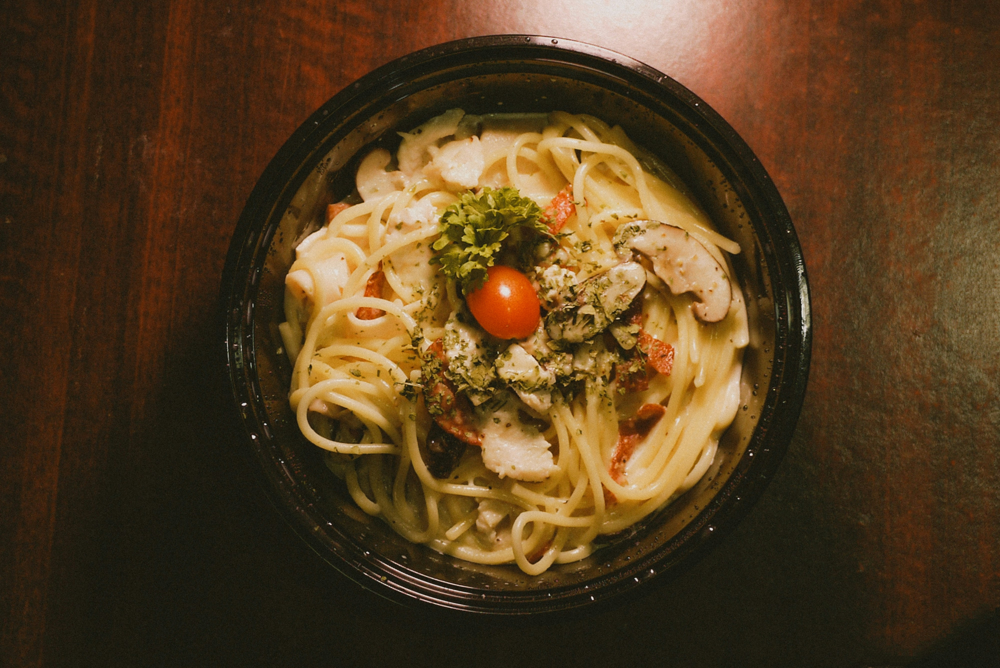

Creamy Carbonara

From start to finish, this indulgent and classic spaghetti carbonara recipe takes just 30 minutes to make.
Did I already mention indulgent? Yes, this is not a make-it-everyday recipe. This is an I've-been-eating-my-kale-for-weeks-and-now-I-want-to-splurge recipe.
Ingredients
- 1 tablespoon extra virgin olive oil or usalted butter
- 1/2 pound pancetta or thick cut bacon, diced
- 1 to 2 garlic cloves, minced, about 1 teaspoon(optional)
- 3 to 4 whole eggs
- 1 cup grated Parmesan or pecorino cheese
- 1 pound spaghetti (or bucatini or fettuccine)
- Kosher salt and freshly ground black pepper to taste
Method
- Heat the pasta water: put a large pot of salted water on to boil (1 tablespoon salt for every 2 quarts of water.)
- While the water is coming to a boil, heat the olive oil or butter in a large sauté pan over medium heat. Add the bacon or pancetta and cook slowly until crispy.Add the garlic (if using) and cook another minute, then turn off the heat and put the pancetta and garlic into a large bowl.
- In a small bowl, beat the eggs and mix in about half of the cheese.
- Once the water has reached a rolling boil, add the dry pasta, and cook, uncovered, at a rolling boil.
- Toss the pasta with pancetta or bacon
- Add the beaten eggs with cheese and toss quickly to combine once more. Add salt to taste. Add some pasta water back to the pasta to keep it from drying out.
- Serve at once with the rest of the parmesan and freshly ground black pepper. If you want, sprinkle with a little fresh chopped parsley.
Home